变压器的设计和优化
变压器是毫米波电路设计中常用的器件。本文介绍了变压器的基本模型、匹配限制、插入损耗估计、宽带匹配和微调等方面。
变压器的模型
变压器的基本模型如下
因此，一个变压器可以由初级自感$L_p$，次级自感$L_s$和互感$M$定义。此外，两个常用的量——圈数比$n$和耦合系数$k$——可以定义为
变压器的基本模型可以等效转化为T型模型
如果要进一步展现变压器的直流隔离作用，需要在一侧加一个理想变压器。由于这个模型没有跨接在两端的互感，可以在史密斯圆图上绘制出轨迹，方便匹配的设计。
此外，另一种适用于理论分析的模型是John Long提出的模型[1]，如下
这个模型涵盖了初级和次级的电阻损耗，并将变压器等效为理想变压器和漏电感。这可以用来分析阻抗，例如对于理想变压器（$k=1$，$L_p, L_s$同比趋于无穷大），其输入阻抗为
上述的几种模型都是使用集总元件表征变压器的特征，因而只在窄带范围内有效。适用于宽带建模的变压器模型主要有分布式模型和传输线模型。例如，一个常见于八边形变压器的分布式模型如下
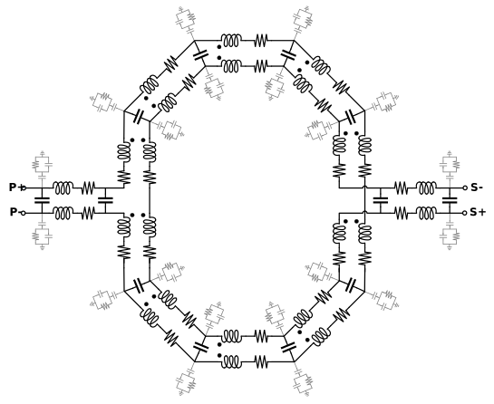
这种模型对变压器的每一段线进行建模，并组成最终的整体模型。传输线模型如下
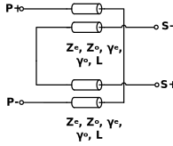
其组成元件数量较少，方便分析。
变压器匹配的限制
值得注意的是，变压器匹配并不是万能的，在$L_p>0, L_s>0, k<1$的约束下，有一部分容性区域无法触及。例如，从500 Ohm // 30 fF出发，位于负载等Q圆以下的部分无法到达。这可以用Long的变压器模型解释：在负载阻抗经nk:1理想变压器变换后，Q值不变，此时并联电感、串联电感都只能使输入阻抗向上移动，因而负载阻抗等Q圆以下的部分不可达。但幸运的是，前级放大器的输出阻抗通常为容性，变压器只需匹配到其共轭的感性阻抗点，因此变压器可以实现绝大多数的放大器级间匹配。
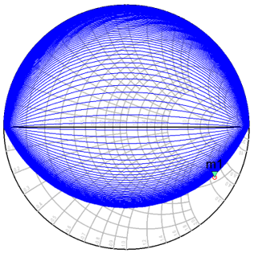
变压器的插入损耗
理论插入损耗值为[2]
其中$Q=\sqrt{Q_pQ_s}$，其关系可以绘图为
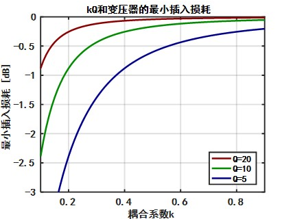
可见，$kQ$乘积越高，变压器的最小插入损耗越小。
变压器的宽带匹配
考虑变压器的宽带匹配需要加上前置放大器输出阻抗、后级放大器输入阻抗的影响，原理图如下：
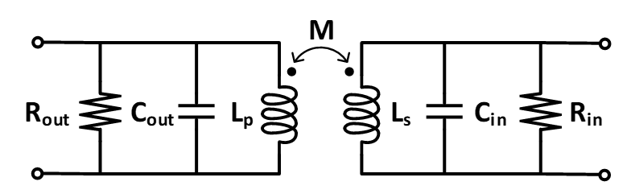
当满足
跨阻约为[3-4]
其极点为
通常的，变压器有三种使用方法：
| $Z_{21}$ | 特性 |
|---|---|
| 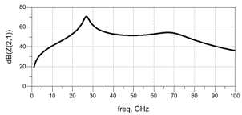 | 高耦合变压器只用了一个峰值，效率高 |
| 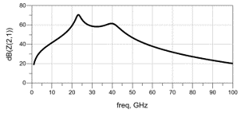 | 中等耦合变压器带宽较宽，但带内波动大 |
| 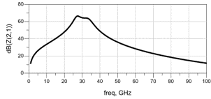 | 低耦合变压器有平坦、宽带的频率响应 |
低耦合变压器的微调
有时，需要对低耦合变压器进行微调，以满足功率要求。进行微调时，$L_p$、$L_s$和$M$对变压器输入阻抗随频率变化路径的影响为
| 增大$L_p$ | 增大$L_s$ | 增大$M$ |
|---|---|---|
|  |  |  |
各参数对输入阻抗的影响可以总结为：
- $L_p$主要影响输入阻抗的虚部
- $L_s$主要影响中心频率
- $M$主要影响两个极点的距离
参考
- J. R. Long, “Monolithic transformers for silicon RF IC design,” in IEEE Journal of Solid-State Circuits, vol. 35, no. 9, pp. 1368-1382, Sept. 2000. DOI: 10.1109/4.868049
- Aoki, S. D. Kee, D. B. Rutledge and A. Hajimiri, “Distributed active transformer-a new power-combining and impedance-transformation technique,” in IEEE Transactions on Microwave Theory and Techniques, vol. 50, no. 1, pp. 316-331, Jan. 2002. DOI: 10.1109/22.981284
- H. Jia, C. C. Prawoto, B. Chi, Z. Wang and C. P. Yue, “A Full Ka-Band Power Amplifier With 32.9% PAE and 15.3-dBm Power in 65-nm CMOS,” in IEEE Transactions on Circuits and Systems I: Regular Papers, vol. 65, no. 9, pp. 2657-2668, Sept. 2018. DOI: 10.1109/TCSI.2018.2799983
- M. Vigilante, P. Reynaert, 5G and E-Band Communication Circuits in Deep-Scaled CMOS. Switzerland: Springer, 2018. DOI: 10.1007/978-3-319-72646-5
- Post link: https://triblemany.github.io/archives/81501320/transformer-design.html
- Copyright Notice: All articles in this blog are licensed under BY-NC-SA unless stating additionally.